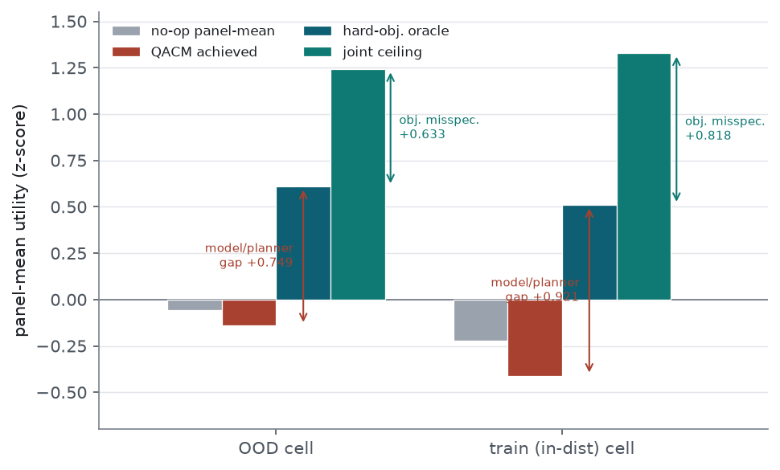
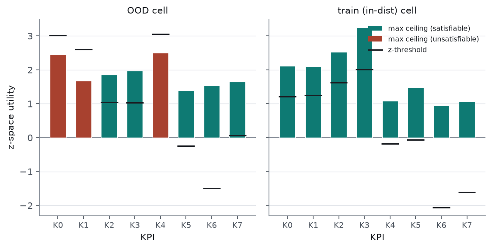
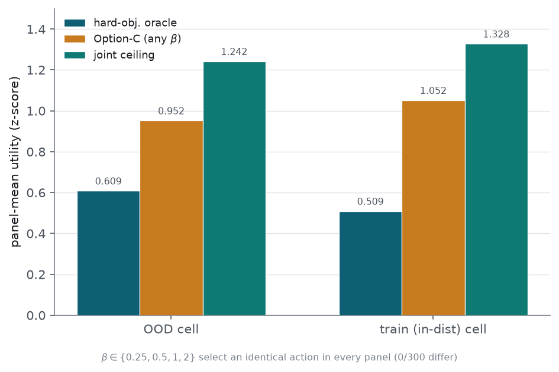

utilities.json files.
We examine whether the negative Env IV QACM utility is a planner/objective problem or a benchmark/threshold artifact. Working from saved utilities on the two self-enumeration cells (out-of-distribution and in-distribution), we compute the reachable single-action ceiling and decompose the QACM regret. The joint single-action ceiling is positive (+1.242 out-of-distribution, +1.328 in-distribution), with 80% of panels carrying a positive joint ceiling, so on average the conflict is not negative-sum and benchmark/threshold infeasibility is unlikely to be the dominant aggregate cause, though not eliminated (20% of panels have a non-positive joint ceiling, and the ceiling is measured over a single-parameter sweep). The regret relative to the joint ceiling splits into an objective-misspecification term (+0.633 / +0.818) and a model/planner-realisation term (+0.749 / +0.921); the two are comparable and the model/planner-realisation term is the larger in both cells. An offline soft-satisfaction oracle (Option C) under a perfect model lifts the utility above the hard-objective oracle by +0.343 / +0.542, reaching +0.952 / +1.052 and remaining −0.29 / −0.28 below the joint ceiling. Under an additive/separable decomposition, the deployed estimate is realised QACM plus that lift, +0.203 / +0.131 — a small positive, i.e. Option C is predicted to move Env IV just above no-op; this rests on a separability assumption and can only be confirmed by building and evaluating Option C. The selected action is identical for the four tested β∈{0.25,0.5,1,2} on the true-utility oracle. These figures are an offline prediction under a perfect model, not a built result; the build decision is left to the user.
The 2026-08-26 objective fix corrected the structure-independent component of the negative planner utility on Env I and was inert on Env III and Env IV, whose decisions seldom reach the satisfied region the term modifies. Env IV therefore stayed negative, and its in-distribution utility (−0.412) is lower than its out-of-distribution utility (−0.140). The question addressed here is whether this residual is a planner/objective problem — a reachable target the planner and objective fail to claim — or a benchmark/threshold artifact in which the target utility is not reachable at any single action. We treat these as the two competing hypotheses (b) planner/objective and (c) benchmark/threshold, following the 2026-08-25 recipe, and resolve between them by measuring the reachable ceiling and decomposing the regret.
All numbers are post-hoc arithmetic on the saved utilities.json for the two Env IV
self-enumeration cells (enum_source=self, QACM planner, quantile aggregator); no model is
retrained and no evaluation is re-run. The out-of-distribution cell normalises each per-KPI utility on the
out-of-distribution parameter range and the in-distribution cell on the training range, so the two
references differ. Utilities are per-KPI z-scores (value−mean)/std with
mean/std cached per param-range.
Four quantities are computed. (i) The three-number decomposition (ceiling, no-op reference, QACM achieved) over the 420 (decision, conflict-xApp) pairs per cell, mirroring the 2026-08-25 recipe. (ii) The joint single-action ceiling: each panel is one action on one shared conflict param, so the per-xApp maxima are not jointly reachable; the joint ceiling is mean max_k Ubar(k) with panel-mean utility Ubar(k) = mean_i curves[i].values[k] over 300 panels per cell (0 excluded). (iii) A perfect-model hard-objective oracle that picks k* = argmin_k J_hard(k) with the shipped objective
reusing cdd_oran.planners.cost.weighted_distance for
(dist_i, sat_i). This oracle assumes uniform weights
w_i = 1.0 and τ = 10 (the scaling
term), matching the evaluate.py normalisation; this is an assumption, and no
weight-sensitivity was run, so the exact split is assumption-dependent and the qualitative “both
terms comparable” reading is the safe one. (iv) An offline soft-satisfaction oracle (Option C)
that picks k_soft = argmax_k Σ_i σ(s_i(k)/β), with
s_i = (u_i−thr_i) for direction 0 and
(thr_i−u_i) for direction 1 in z-space. Both oracles use the true
utilities (a perfect model), which isolates the objective from model error.
The joint single-action ceiling is positive and above +1.2 in both cells (Table 1), and 80% of panels carry a positive joint ceiling. On average the conflict is therefore not negative-sum: the best single shared action reaches a positive panel-mean utility, well above the QACM-achieved −0.140 / −0.412. This is an average-potential result, not universal feasibility: 20% of panels still carry a non-positive joint ceiling, the joint ceiling maximises panel-mean utility rather than testing simultaneous threshold satisfaction, and it is computed over a 101-pt single shared-parameter sweep that is not shown equal to the planner’s full action grid. The first-pass per-pair number (+1.0676 / +1.2627) is lower than the per-panel independent ceiling because of a per-pair versus per-panel denominator difference, not because of infeasibility. On matched per-panel terms, the joint ceiling equals the per-panel independent ceiling out-of-distribution (+1.2421) and sits +0.074 below it in-distribution (+1.3276 versus +1.4016), the Jensen gap expected from sharing one action across xApps.
| Quantity | OOD | train (in-dist) |
|---|---|---|
| per-xApp independent ceiling (per-pair) | +1.0676 | +1.2627 |
| per-panel independent ceiling | +1.2421 | +1.4016 |
| joint single-action ceiling | +1.2421 | +1.3276 |
| fraction of panels with joint ceiling > 0 | 0.800 | 0.807 |
Relative to the joint ceiling, the QACM regret is +1.382 out-of-distribution and +1.739 in-distribution. It splits into two terms (Table 2, Figure 1). The objective-misspecification term — the gap the shipped hinge / −(Σsat)² objective leaves even under a perfect model — is +0.633 / +0.818: the hard-objective oracle reaches only +0.609 / +0.509 against the +1.242 / +1.328 joint ceiling. The model/planner-realisation term — the further drop from the hard-objective oracle to realised QACM — is +0.749 / +0.921. This second term is not pure model prediction error: it also absorbs conflict-enumeration / action-grid and planner-optimisation effects, hence the label. The two terms are comparable, and the model/planner-realisation term is the larger in each cell; neither alone accounts for the shortfall. The exact split is assumption-dependent (uniform weights, τ=10, no weight-sensitivity run), so the qualitative “both terms comparable” is the safe reading.
| Quantity | OOD | train (in-dist) |
|---|---|---|
| no-op panel-mean | −0.0583 | −0.2226 |
| QACM achieved | −0.1402 | −0.4116 |
| hard-objective oracle | +0.6086 | +0.5093 |
| joint single-action ceiling | +1.2421 | +1.3276 |
| regret (joint ceiling − QACM) | +1.382 | +1.739 |
| objective misspecification (joint − hard-oracle) | +0.633 | +0.818 |
| model/planner-realisation gap (hard-oracle − QACM) | +0.749 | +0.921 |

The in-distribution cell is worse than the out-of-distribution cell, but the account is qualitative because the two cells use different range-specific z-references (out-of-distribution range versus training range), so ceiling, baseline, and QACM are not on one common scale and the deficit cannot be split into quantified causes. The reachable ceiling does not drop in-distribution — it rises, from +1.2421 to +1.3276 (joint) — so the more negative in-distribution QACM presents as a larger unclaimed regret at an equal-or-higher ceiling rather than an unreachable target. The no-op reference also shifts down in-distribution (panel-mean −0.0583 to −0.2226); part of the more negative absolute QACM is plausibly this reference movement, but QACM relative to no-op is also worse in-distribution (−0.0051 versus −0.0760 per pair). Satisfaction is also unlikely to be the binding constraint: the satisfaction rate is higher in-distribution (0.221 versus 0.162) while the utility is worse, consistent with the hinge/flat-region satisfaction clamp being infrequently reached at QACM’s selected actions; this does not by itself establish that the satisfaction term is non-binding during action selection, which a panel-level joint-threshold test would be needed to settle.
Grouping the ceiling by KPI (xApp i → KPI i) shows which KPIs are satisfiable at the best conflict-param action (Tables 3–4, Figure 2). The z-threshold is (kpi_threshold−mean)/std; directions are [0,0,0,0,0,1,0,0] (direction 0: KPI ≥ threshold desired; direction 1: KPI ≤ threshold desired). Because mean/std are range-specific, both cells are shown. In the out-of-distribution cell, KPIs 0, 1, 4 carry z-thresholds above +2.6 with best-action ceilings below them, so no evaluated action reaches their threshold; the other five each have some action whose ceiling exceeds threshold. In the in-distribution cell every KPI has a max ceiling above its z-threshold — for each KPI some action reaches that KPI’s threshold, which is a per-KPI statement and does not show that one shared action jointly satisfies all eight — yet the observed satisfaction rate is only 0.221. Each threshold is individually reachable while the realised satisfaction rate stays low, consistent with the satisfied region being infrequently reached at QACM’s selected actions; a panel-level joint-threshold test is not run here.

| KPI | dir | raw thr | z-threshold | mean ceiling | max ceiling | max ceiling ≤ z-thr |
|---|---|---|---|---|---|---|
| 0 | 0 | 55 | +3.0137 | +0.8947 | +2.4479 | yes |
| 1 | 0 | 70 | +2.6026 | +0.3678 | +1.6782 | yes |
| 2 | 0 | 85 | +1.0465 | +1.8505 | +1.8505 | no |
| 3 | 0 | 60 | +1.0265 | +1.9776 | +1.9776 | no |
| 4 | 0 | 75 | +3.0537 | +1.4959 | +2.5076 | yes |
| 5 | 1 | −20 | −0.2433 | +1.3866 | +1.3879 | no |
| 6 | 0 | 45 | −1.4944 | +1.5315 | +1.5315 | no |
| 7 | 0 | 40 | +0.0642 | +1.6536 | +1.6536 | no |
| KPI | dir | raw thr | z-threshold | mean ceiling | max ceiling | max ceiling ≤ z-thr |
|---|---|---|---|---|---|---|
| 0 | 0 | 55 | +1.2102 | +0.8928 | +2.1129 | no |
| 1 | 0 | 70 | +1.2474 | +0.9380 | +2.0972 | no |
| 2 | 0 | 85 | +1.6249 | +2.5216 | +2.5216 | no |
| 3 | 0 | 60 | +2.0093 | +3.2458 | +3.2458 | no |
| 4 | 0 | 75 | −0.1794 | +1.0859 | +1.0859 | no |
| 5 | 1 | −20 | −0.0679 | +1.4773 | +1.4773 | no |
| 6 | 0 | 45 | −2.0580 | +0.9510 | +0.9510 | no |
| 7 | 0 | 40 | −1.6144 | +1.0733 | +1.0733 | no |
Under a perfect model, the soft-satisfaction oracle (Option C) lifts the panel-mean utility above the hard-objective oracle in both cells, by +0.343 out-of-distribution and +0.542 in-distribution, reaching +0.9521 / +1.0517 (Table 5, Figure 3). This recovers part of the objective-misspecification term but stays −0.290 / −0.276 below the joint ceiling. Under an additive/separable decomposition, the deployed estimate is realised QACM plus this objective lift, +0.203 out-of-distribution and +0.131 in-distribution — a small positive, so the prediction is that Option C moves Env IV just above no-op. This rests on a separability assumption: changing the objective changes which action is selected under the learned model and which prediction errors matter, so the model/planner-realisation term cannot be assumed unchanged and does not bound the deployed gain; the objective change does not directly address that term and their interaction is not exercised here. The deployed value could land either side of the additive estimate and can only be confirmed by building and evaluating Option C; the predicted margin above zero is small. The selected action k_soft is identical across the four tested β∈{0.25,0.5,1,2} in every panel (0/300 differ) on the true-utility oracle; this is not established outside those values or under learned predictions.
| Quantity | OOD | train (in-dist) |
|---|---|---|
| hard-objective oracle | +0.6086 | +0.5093 |
| Option-C, β = 0.25 | +0.9521 | +1.0517 |
| Option-C, β = 0.5 | +0.9521 | +1.0517 |
| Option-C, β = 1.0 | +0.9521 | +1.0517 |
| Option-C, β = 2.0 | +0.9521 | +1.0517 |
| joint single-action ceiling | +1.2421 | +1.3276 |
| Option-C lift over hard-oracle | +0.343 | +0.542 |
| Option-C gap below joint ceiling | −0.290 | −0.276 |

These figures are an offline prediction under a perfect model, not a built result and not a recommendation to build. The analysis predicts that a soft-satisfaction objective would raise the objective-limited utility for Env IV and, under the separability assumption above, move it marginally positive; the realised deployed gain depends on the untouched interaction with the model/planner-realisation term, which this offline analysis does not exercise.
Several qualifications bound the reading above. The reachability and ceiling numbers are computed over a 101-pt single shared-parameter sweep and are not shown equal to the planner’s full action grid, and the joint ceiling maximises panel-mean utility rather than testing simultaneous threshold satisfaction, so benchmark/threshold infeasibility is made unlikely as the dominant cause rather than eliminated. The deployed Option-C estimate (+0.203 / +0.131) rests on an additive/separability assumption; changing the objective changes which action is selected under the learned model and which prediction errors matter, so the estimate could shift either way and is confirmable only by building and evaluating Option C. The model/planner-realisation term is a composite — prediction error plus conflict-enumeration / action-grid and planner-optimisation effects — not pure model error, and the objective change does not directly address it. The two cells use different range-specific z-references, so the in-distribution versus out-of-distribution account is qualitative and not a quantified causal split. The β behaviour is established only for the four tested values on the true-utility oracle, and the objective/regret split assumes uniform weights and τ=10 with no weight-sensitivity run.
The analysis indicates that the Env IV shortfall is most consistent with a distinct planner/objective-and-model case rather than a benchmark/threshold artifact. The mean joint single-action ceiling is positive (+1.242 / +1.328, 80% of panels positive), so on average the target is reachable and benchmark/threshold infeasibility (hypothesis c) is unlikely to be the dominant aggregate cause, though not eliminated (20% of panels non-positive; single-parameter sweep). The regret relative to that ceiling divides into comparable objective-misspecification (+0.633 / +0.818) and model/planner-realisation (+0.749 / +0.921) terms, with the model/planner-realisation term the larger in both cells. This mechanism differs from the Env I satisfied-region flatness the 2026-08-26 objective term addressed: Env IV satisfaction rates are low (0.16–0.22), the term is inert there, and in the in-distribution cell each KPI ceiling exceeds its threshold individually while the realised satisfaction rate stays low.
The analysis predicts that Option C (soft satisfaction) would raise the objective-limited utility by +0.34 / +0.54 under a perfect model, reaching +0.952 / +1.052; under an additive/separable decomposition the deployed estimate is +0.203 / +0.131, a small positive that would move Env IV marginally above no-op. The margin is small and rests on a separability assumption that only building and evaluating Option C can confirm, since the objective change does not directly address the larger model/planner-realisation term and their interaction is not exercised here. Within the four tested β∈{0.25,0.5,1,2} the true-utility oracle selects the same action, and Option C is the most invasive objective change of those considered. The build decision — build Option C (confirming the separability assumption by deploying it), investigate the larger model/planner-realisation term, or accept Env IV as a documented open planner/objective-and-model case — is deferred to the user; nothing is built in this report.
envIV_diagnosis.md, envIV_diagnosis_addendum.md,
task2_recommendation.md, envIV_diagnosis_summary.json,
envIV_addendum_summary.json · commit e7534e1 (feat/v2, not pushed).